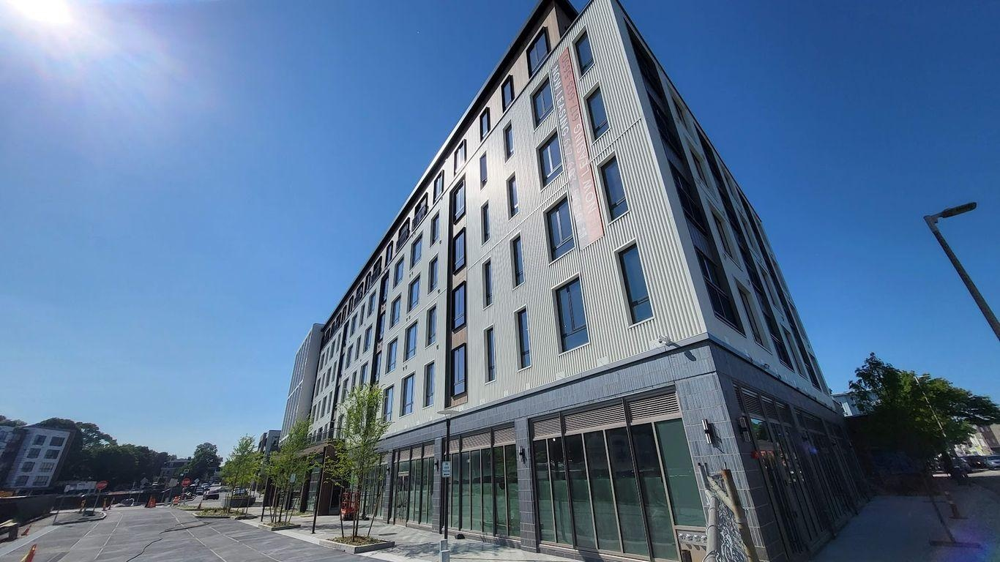

Dot Block fills in a stretch of Dorchester AvenueA sleepy stretch of Dorchester Avenue is about to get a lot more bustling after one of the neighborhood's largest new housing developments opens. What's happening: Nearly 500 residential units across four buildings make up Dot Block, which welcomes its first residents June 14. - Around half of the apartments come online this summer; the second phase of the complex is opening in the future. - When completed, the project will cover over 400,000 square feet over nearly 4 acres with 1.3 acres of green space open to the public. Why it matters: The infusion of new residents and consumers to the Glover's Corner section of Dorchester will boost that stretch of Dot Avenue while giving the Boston rental market some much-needed new housing. - Most apartments in Dot Block certainly won't be cheap, but the complex will add hundreds of units to an area that's been choked by a severe rental housing shortage. Dot Block could also make a major commercial impact on Glover's Corner in Dorchester, the intersection at Freeport Street between the villages of Savin Hill and Fields Corner. - Popular restaurants like Dbar and Blend are an easy walk, as are the shops and eateries at nearby Savin Hill village and the Little Saigon Vietnamese cultural district. - The Southeast Expressway is close by for commuters with a car in the 345-space garage, though anyone frustrated with Dot Ave. traffic may want to stick to the two Red Line stations within walking distance. What they're saying: "It's certainly going to change the look of that part of the neighborhood. It'll be an added benefit that there will be added green space," Jackey West Devine, executive director of local business organization Fields Corner Main Street, told Axios. Details: Dot Block will offer market-rate units ranging from snug studio apartments for around $2,500 a month to three-bedroom units for around $5,000. - Seven of the units are set aside for artist studio and living space and 66 apartments will be income restricted for people earning no more than $49,100 to $113,900 a year with assets under $75,000. What's next: The complex comes with over 20,000 square feet of commercial space at the ground level. - No agreements have been announced for the commercial space. More Boston stories No stories could be found |
 |